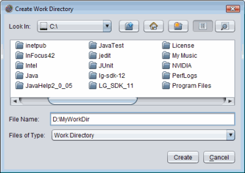

Creating a Work Directory
Every work directory is associated with a specific test suite and a configuration
file after one is created or opened. Each time the harness runs tests, it creates test result files that store
the information collected during the test run. The harness stores these files
in the work directory for all
test runs of the test suite with that configuration.
You must create a new work directory for each new test suite. You might also
choose to create a new work directory to perform multiple test runs of the
same test suite but with different configuration files. If you try to use an
archive work directory that is no longer considered valid by the harness you
must also create a new work directory.
You can create a work directory from either the Test Manager or the Quick Start wizard
(if it is enabled and you are starting a new test run). The harness also prompts
you to specify a work directory if you begin a task requiring a work directory
without having specified one.
Create a Work Directory with the Quick Start Wizard
Note: Some test suites do not implement the optional Quick Start wizard. It won't be available if the test suite architect disabled it.
- Click the Browse button in the Quick Start wizard Work Directory
panel.
The harness displays a Work Directory chooser.
- Use the chooser to navigate to the location of the new work directory.
- Enter the name of the work directory in the text field.
- Click the Create button.
- Complete the Quick Start wizard.
When you complete the Quick Start wizard, the harness opens a new Test Manager window and creates a work directory for the test suite, template, and configuration file combination.
Create a Work Directory with the Test Manager
- Choose File > Create Work Directory from the Test Manager menu bar.
The harness displays the Create Work Directory dialog box.

- Enter the name of the new work directory in the Work Directory Name text
field.
- Click the Browse button and use the File Chooser to select a location for
the work directory.

Do not enter the directory name in the file chooser. The harness uses the
name from the Work Directory Name text
field to create it for you.
Depending on the test suite, the template option might not be allowed
(templates not enabled), might be required (cannot select "No Template"), or might be optional
(operates as described) in the following step. If you select a template, it will be associated
with that work directory for all configurations that are created for that work directory.
-
Use the No Template or Choose a Template buttons to set the template options for the work directory.
-
Check the Launch Configuration Editor box to open the Configuration Editor after the dialog box closes.
-
Click the Create button.
When you create the work directory, the harness opens a new Test Manager window and creates a work directory for the test suite, template, and configuration file combination.
Copyright © 2002, 2011, Oracle and/or its affiliates. All rights reserved.